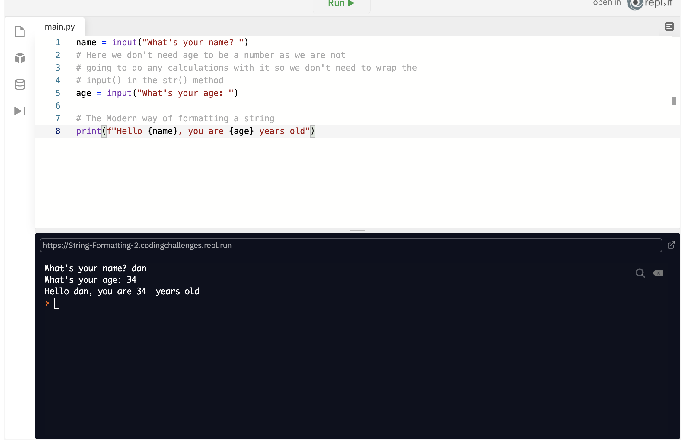
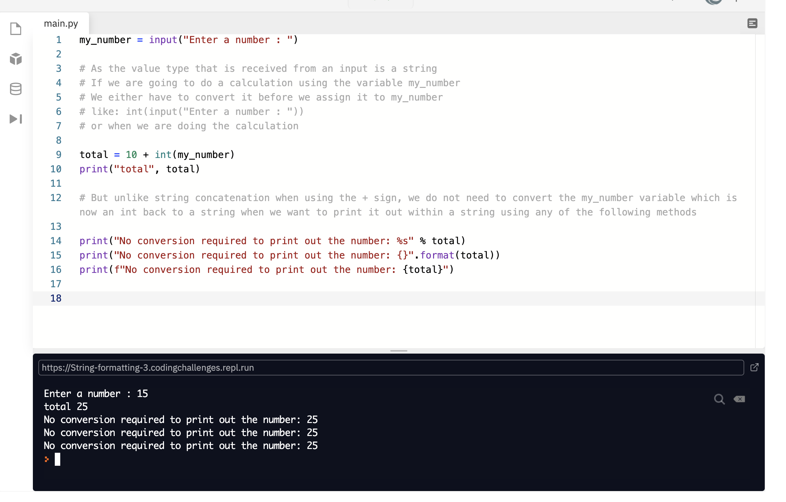
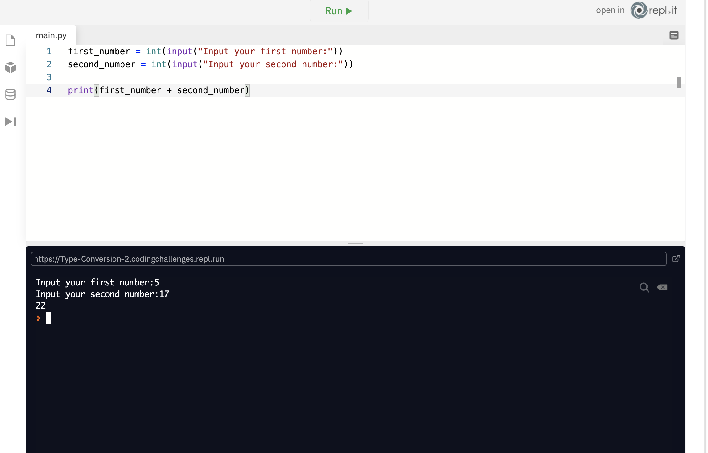
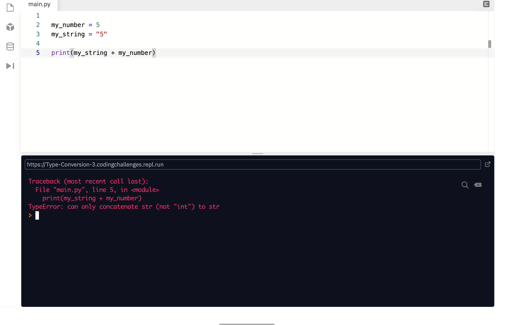
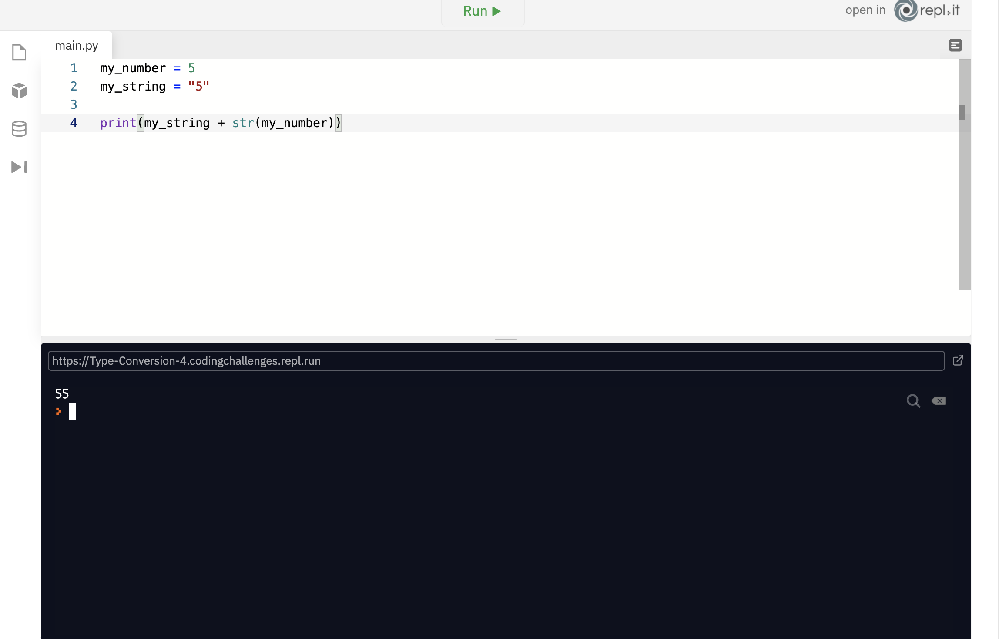
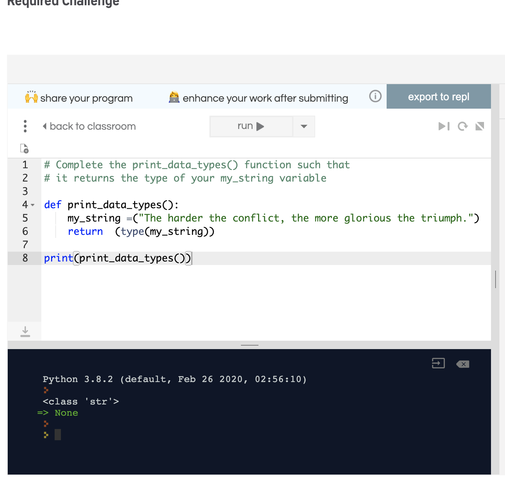
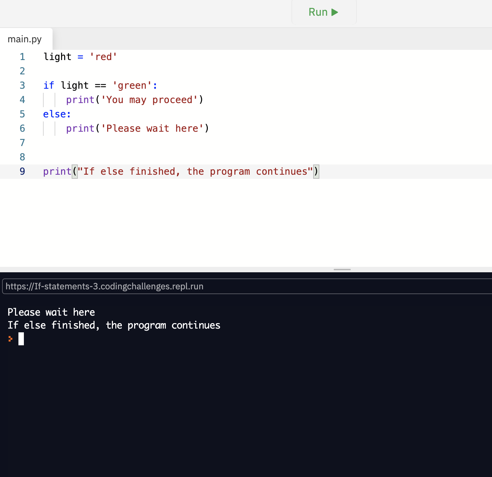
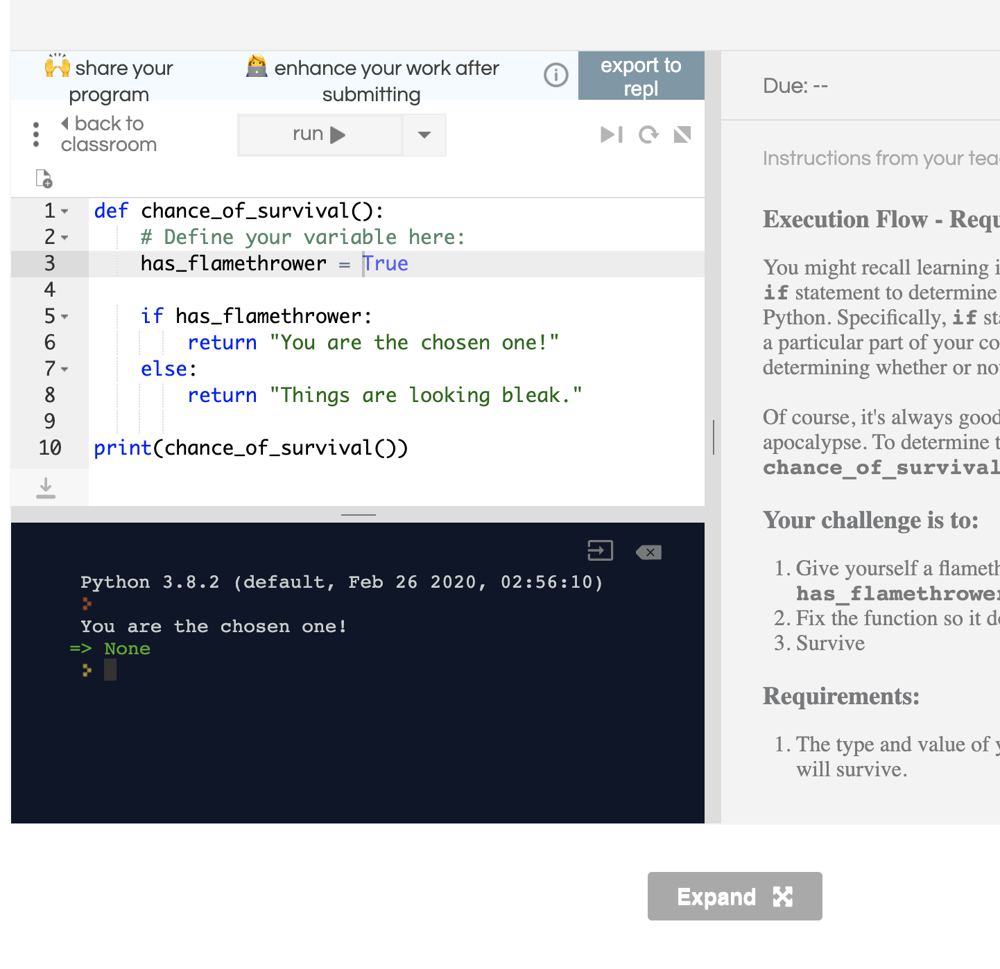

Notes page 2
Allows a user to input data
Instead of just giving data to a user, there are instances where we’ll also need to take data from a user
We can take input from a user using the input() function
input() function
When working with computers, we use what is called an interface to interact with the computer. We’re all familiar with working with Graphical User Interface (GUI). The GUI is where we execute applications from our Desktop, opening folders from My Computer, creating Documents in Microsoft Office, and browsing the web with Chrome or Firefox. While we’re working with Python, and providing output to a user, we’re using the Command Line Interface or CLI. This interface is text-based, as opposed to the graphics-based interface we’re all used to seeing, but just remember that all we’re doing is taking input and outputting information to the user. With that in mind, let’s take a look at how we can receive some input from a user. For this, we’ll need to use the input function.
Here we use the input() function to ask the user for their name. We pass through a string that says “What’s Your Name?” to prompt the user for their name. When this is run, the program won’t continue until you enter some text into the prompt. This value is then stored in a variable called username. Then we ask the user for their age, passing in the string "Please enter your age: " to prompt the user for their age. Notice this time the input is wrapped in the int() method, this converts the result to a number and it is assigned to the variable age Next, we calculate the number of days since the user was born and assign this to the variable days. Then we print out a string that says hello to the user and concatenates the username to the string, followed by the string ", you have been alive for ". As the days variable is a number we need to convert this to a string and then concatenate this to the string, so this time we use the str() method passing in the variable days and finally concatenate on to the end, the string " days"
String formatting is the process of adding placeholder values to a string to be filled in at a later point
Injects text into an empty string at a later point to make it more meaningful
We create placeholder items inside the string (%s) and then refer to them later by using %
In addition to the use of the + operator, to append a string to the end of another string, we also have other ways of formatting a string. In the first example below, we will look at two slightly older ways of doing this, so if you come across them you will understand what is going on. Then in the second example, we will show the modern way of doing string formatting, by using what is called: f-strings
When formatting with f-strings you would do the following: f"{variable}" It is also valid to use the capital letter F The only consideration required to use f-strings is your version of python, which needs to be version 3.6 or above. Let's look at an example below.
In the two examples above you have seen how to format strings in three different ways. And in the previous lesson, you say how string concatenation works using the + symbol. But doing concatenation of strings and numbers you had to convert the number to a string using the str() method in order to output it in a string. In the example below you will see that when using the formatting methods from above, you do not need to convert the number to a string as python converts it for you.
The ability to change the type of a piece of data
It converts a piece of data to another type. For example, the act of converting an int to a string
Python provides us with some different functions that allow us to convert the type of a value.
Python functions include int(), float(), and str(). Although we have different 'types' in Python (ints, floats and strings), we also can change from one type to another. For example, what if we want a user to input some numbers and then add those two numbers together. Let’s take a look at how that might work.

When we use the input() function, the value that we input is a string. Therefore, if we want to add 2 + 2, then the output we’d get would be 22. To get around this, we would need to convert first_number and second_number to integers.
by looking above screen shot, as the numbers are converted to strings, they arent adding they are concatenating together... to add them together we use the int() function withe the input... see below.
By wrapping the input() function in the int function, we can now add those two numbers together. If we now input 2 and 2, we will now get four as our result.
Python is a strongly typed language. Therefore if we wanted to concatenate an int to a string, we wouldn’t be able to do so. In a language like JavaScript, which is a weakly typed language, we would be able to concatenate a number to a string. Let’s take a look at an example of this in Python. If we wanted to concatenate an int to a string, then we’d first need to convert our int to a string; otherwise, Python will give out to us and say: TypeError: can only concatenate str (not "int") to str.
To get this to work, we’ll need to do the following:
 p However, as shown in the previous lesson, when using string formatting, Python’s print function will implicitly convert an int to a string for us.true or false, to make decisions in our code, they must be true or false
We’ve looked at how we can use ints, floats, and strings. Python also has bools. Bools are a type of variable that will only ever be True or False. We can declare them as just as we declare any other type of variable in Python. The only difference is that the value must be either True or False. Note that booleans are capitalized in Python, unlike JavaScript.
first_bool = True second_bool = False print(first_bool, second_bool)
Here we have declared two variables, first_bool and second_bool. This time, however, we’re printing out both variable using a single print() function. When using the print() function, we can pass through as many variables as we want, so long as we separate them by commas (,).
Booleans - Required: One of the most common ways to determine how a program in any programming language should function is to test whether certain conditions are true or false and make decisions based on the result. To do this, we can use another data type in python: the boolean. Just like floats will always be decimal numbers, ints will always be integers/whole numbers, and strings will always be strings of text, booleans will always be either True or False. Your challenge is to: Define a variable, my_boolean, inside the print_booleans() function. The variable should be a boolean data type and be True Complete the print_booleans() function so that it returns your variable (i.e. so that it returns True)
# Complete the print_booleans() function so that it returns True
def print_booleans():
my_boolean = True
return (my_boolean)
print(print_booleans())
we use the type() function
Because of Python’s dynamically typed nature, sometimes we need to know what the variable we’re working with's type is precisely. To do this we can use the type() function.
This will give us the following output:int float string bool. Every object in Python maps to a class but this isn’t too important for now. All we need to know is that we can find out the type for each of our variables. We can see that we’ve printed out variables of type int, float, str (short for string) and bool.
Data Types - Required: Over the course of the last several challenges you've learned that there are a number of different data types in Python. You've learned about ints, floats, strings and booleans, as well as how they can interact with each other. Sometimes with all these different data types we need to know which type we're working with. For that, there's the type() function. You've actually already used this in a couple of other challenges, but if you don't remember, the type() function returns the type of whatever you pass into it. Your challenge is to: Define a variable, my_string inside the function, which should be a string with the value "The harder the conflict, the more glorious the triumph." Use the type() function to complete the print_data_types() function so that it returns the type of your my_string variable. Requirements: Your function must return the type of your variable, not the value of it.
Provide a means of choosing a path of execution, based on whether some condition is true or false
We use the if keyword to denote an if statement, followed by some condition that can be evaluated to either true or false
In everyday life, we face a number of decisions that require us to choose different paths based on some conditions. For example, the type of food we choose to eat might depend on the kind of ingredients that we currently have. Computers are also capable of making these types of decisions. We can do this using if statements.
my_variable = True
if my_variable:
print("This condition is True")
print("ABC")
print("DEF")
'If statements' revolve around whether or not something equates to true. Here we use the if keyword, followed by my_variable, which in this case is a bool, with the value of True. The boolean is called the condition and is what makes up an if statement. After the if statement we have a print() function that we use to print out the value of my_variable. Four blank spaces indent this code. The indented code is called a code block. We indent this part of the code to inform Python that we don’t always want to execute this code. Before we want to indent a piece of code, we need to use the colon delimiter (:). The colon informs Python that the next line of code will be part of a code block. Because our variable contains a value of True, our condition will evaluate to true. Anything contained within the if statement will be executed, meaning that the variable will be printed. Try changing the value of my_variable to False and see what happens!
In this example, we’ve changed the value of my_variable to False. This time around the print function doesn’t get executed because of the condition in the if statement which evaluated to false.
my_variable = False if my_variable: print(my_variable) print("Hello")
However, the second print function will always be executed, as once the if statement has been evaluated, the program goes back to running normally.
The example below contains an else statement, we use an else statement if we would like our code to be able to perform some action if our conditional statement happens to be False. After the else statement we have a print() function that we use to print out a message. Four blank spaces indent this code. The indented code is called a code block. We indent this part of the code to inform Python that we don’t always want to execute this code. Before we want to indent a piece of code, we need to use the colon delimiter (:). The colon informs Python that the next line of code will be part of a code block.
You might recall learning in the True or False lessons that you can use an if statement to determine whether or not something should happen in Python. Specifically, if statements are used to determine whether or not a particular part of your code should execute. They do this by determining whether or not a particular condition is true. Of course, it's always good to know how you'd fare in a zombie apocalypse. To determine that we've written a small Python function, chance_of_survival(), which currently returns an error. Your challenge is to: Give yourself a flamethrower by defining a variable, has_flamethrower Fix the function so it doesn't return an error Survive Requirements: The type and value of your variable determine whether or not you will survive.
